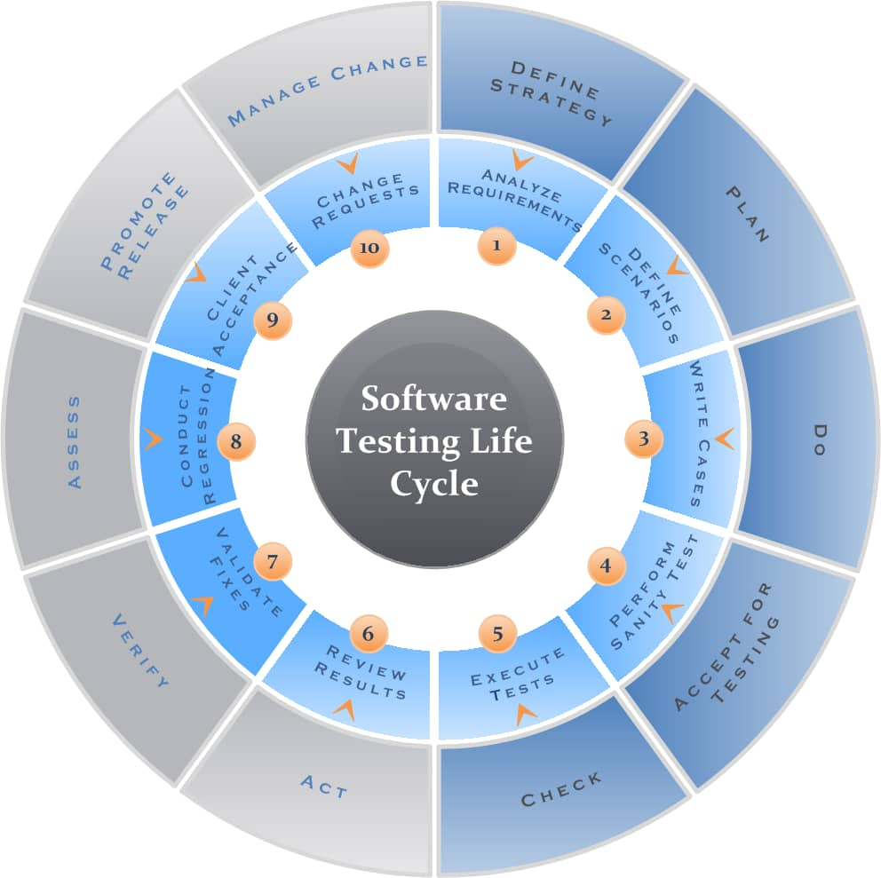

Intentionally probing systems, networks and apllications for vulnerabilities to improve security.
Connecting computing devices like computers, servers, and routers using wired or wirwless technologies to share data and resources.

Visual flowcharts detailing the 7 phases of STLC.
Analyzing the security environment of a company's computer network and identifying potential vulnerabilies.